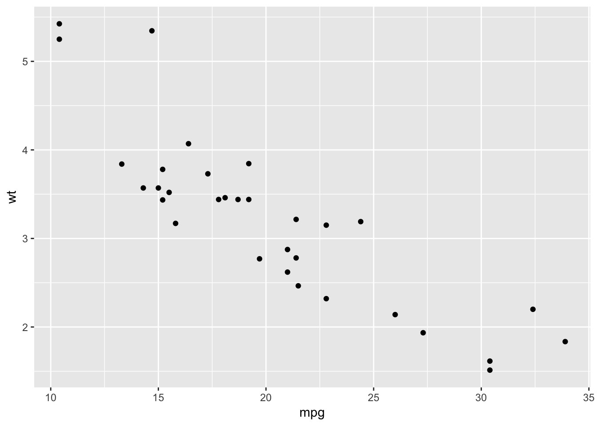
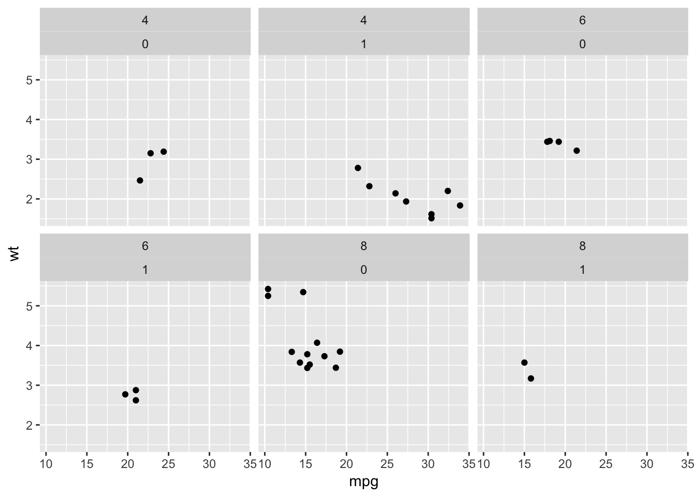
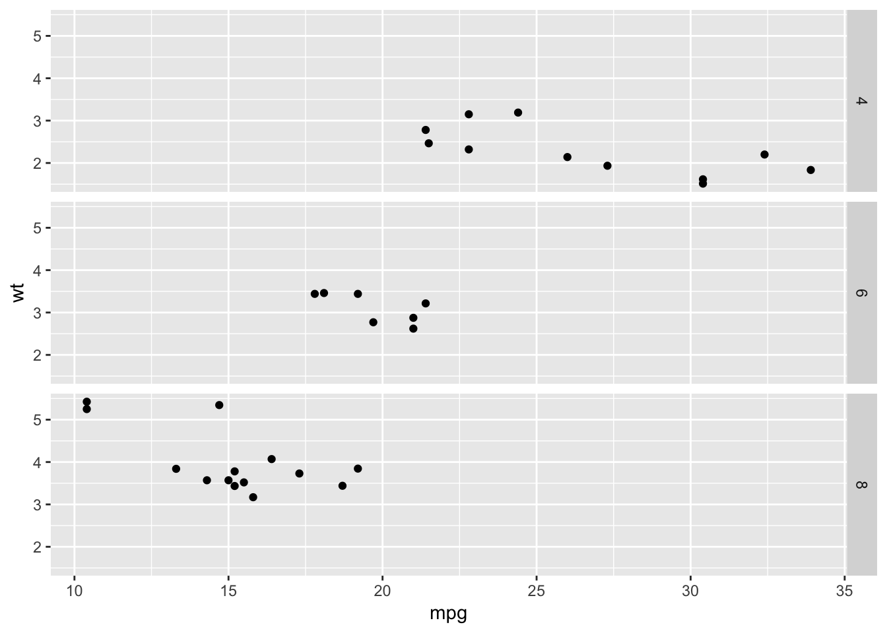
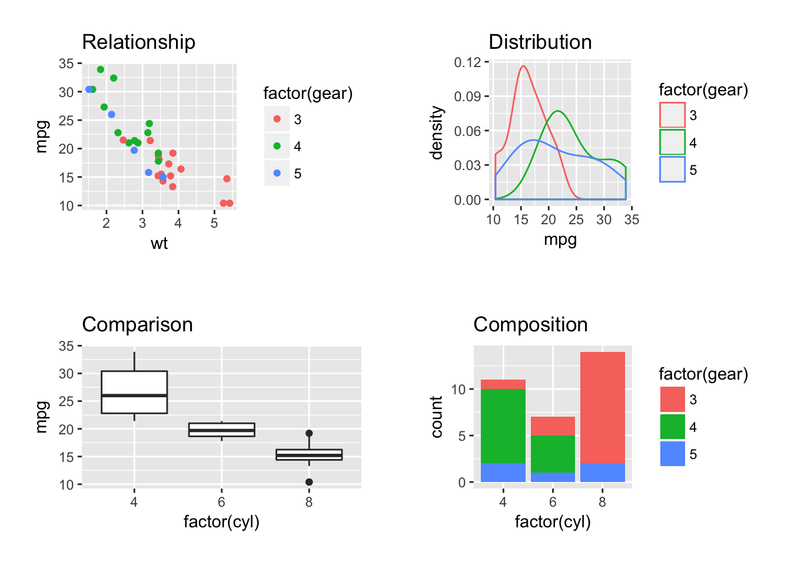

Tricks with ggplot
More ways to facet a plot
Facets are ways to repeat a plot for each level of another variable. ggplot has two ways of defining and displaying facets:
- As a list of plots, using
facet_wrap. - As a grid or matrix of plots, using
facet_grid().
Examples of both are shown below, using the following plot as a starting point:
base.plot <- ggplot(mtcars, aes(mpg, wt)) + geom_point()
base.plot
facet_wrap
If we want one facet we just type the tilde (~) symbol and then the name of the variable. This is like typing the right hand side of a formula for a regression model:
base.plot + facet_wrap(~cyl)
If we want two facets we extend the formula, using the + sign:
base.plot + facet_wrap(~cyl+am)
Note, the order of variables in the formula makes a difference:
base.plot + facet_wrap(~am+cyl)facet_grid
With one variable facet_grid produces similar output. Note the . (period) on the left hand side of the formula now to make explicit we only have one variable, and we want it on the x axis:
base.plot + facet_grid(.~cyl)
We can flip the facets around by putting the cyl variable on the left hand side of the ~:
base.plot + facet_grid(cyl~.)
And facet_grid can also create facets for two or more variables:
base.plot + facet_grid(am~cyl)Here the labelling and the arrangement of plots is perhaps nicer because it is clearer that plots for cyl are arrange left to right, and for am they are top to bottom.
Combining separate plots in a grid
Note that combining separate plots in a grid is different from facetting, and it may be you want that instead.
If you really want to combine several plots, the gridExtra and cowplot packages can be helpful. This is the code from the example in the graphics section, which may be a useful starting point:
comparison <- ggplot(mtcars, aes(factor(cyl), mpg)) + geom_boxplot() + ggtitle("Comparison")
relationships <- ggplot(mtcars, aes(wt, mpg, color=factor(gear))) + geom_point() + ggtitle("Relationship")
distributions <- ggplot(mtcars, aes(mpg, color=factor(gear))) + geom_density() + ggtitle("Distribution")
composition <- ggplot(mtcars, aes(factor(cyl), fill = factor(gear))) + geom_bar() + ggtitle("Composition")
mm <- theme(plot.margin=unit(rep(1.5,4), "line"))
gridExtra::grid.arrange(relationships+mm, distributions+mm, comparison+mm, composition+mm, ncol=2)